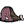

Циклоп-олень
“Вот это гигантище!”
Циклоп - олень (Deerclops) — сезонний бос у грі Don't Starve, що з'являється лише під час зими.
Є найбільшим босом в одиночній версії гри та одним із найперших гігантів, з якими зустрічається гравець під час свого виживання. Має нетерпимість до будівель гравця і ставиться до вороже настроєних істот.
З'ява
Циклоп-олень приходить до гравця на 10-й день зими. При стандартних налаштуваннях та з урахуванням того, що першим сезоном була осінь, бос з'явиться в ніч із 30 на 31 день. При цьому він має шанс приходу 67%, що означає можливість прожити зиму без зустрічі з цим босом. Про прихід гіганта попереджає моторошне низьке гарчання, більше схоже на крижане дихання, яке триває рівно хвилину. Після закінчення звуків циклоп з'явиться з відривом двох екранів від персонажа. Його кроки викликають тремтіння землі і, як наслідок, екран гравця. У процесі наближення до боса тремтіння і стукіт від його кроків посилюються, що дозволяє краще визначити місце розташування циклопу.
Бій
Так як циклоп-олень є монстром, він спочатку ворожий до персонажа. Тому, якщо гравець наблизиться до боса, він відразу перестане ламати структури і вступить у бій. Циклоп має лише одну атаку, яку застосовує кожні 3 секунди. Він піднімає лапи вгору, а потім обрушує їх на землю, чим піднімає на поверхню безліч крижаних шпильок. Від цієї атаки легко уникнути просто відбігши на достатню відстань від боса. Зі звичайною швидкістю бігу персонаж може встигнути зробити три удари зброєю, перш ніж буде змушений відбігати для увороту від атаки. Екіпірована тростина збільшує швидкість пересування і, відповідно, дозволяє робити чотири удари по босу замість трьох. Варто також відзначити, що при отриманні збитків від крижаних шипів персонаж отримуватиме дозу заморозки, яка через три удари призведе до повного замерзання та знешкодження. Щоб такого не відбувалося, необхідно ретельно ухилятися від ударів циклопу або мати постійне джерело тепла, яке бос не зможе зруйнувати, наприклад звичайне багаття. Бій з гігантом також ускладнюється його високим негативним впливом на розум персонажа, до чого необхідно бути готовим, маючи при собі предмети, що дозволяють швидко відновити цей показник. Після смерті циклоп-олень залишає гравцеві своє око, а також вісім одиниць м'яса.
Don't Starve Together
У мультиплеєрі бос має збільшену вдвічі кількість здоров'я та збільшену швидкість пересування. Перероблено атаку циклопа-оленя: вона завдає шкоди тільки в області перед циклопом, візуально визначається крижаними брилами. Завдяки цьому боса набагато легше вбивати групою гравців чи супутників. Також видобуток з цього боса включає ескіз скульптури гіганта. Якщо у світі активні місячні розломи, після смерті циклопа-оленя його тіло не зникне. З'явиться гештальт світлоцвіту, який вселиться в труп, тим самим воскрешаючи циклопу у формі кристального циклопу-оленя, посиленої версії звичайного. Цього можна уникнути, якщо підпалити труп. Під час події "Зимовий бенкет" циклоп-олень змінює свій зовнішній вигляд: його шерсть стає темно-синьою, а око спалахує червоним світлом. Також бос набуває нової атаки — час від часу він випускає лазерний промінь зі свого ока у бік гравця. Втрата, що наноситься лазером, дорівнює збитку від звичайної атаки боса. Крім того, як і звичайна атака, лазерний промінь здатний руйнувати ігрові структури. Ці особливості нестандартного боса мають і позитивні сторони — вночі око циклопу світиться досить яскраво, щоб висвітлювати невеликий простір навколо себе і дозволяти гравцеві обходитися без штучних джерел світла під час бою.
Різне
- Було додано в гру з оновленням "A Winter's Tale".
- Його вид — Megatherioceras Polyphemus (судячи, наприклад, по реплікам Уікерботтом). Тим не менш, єдиний схожий за назвою таксон — вимерлий рід Therioceras надряду Наутилоїдеї.
- У відео оновлення "Long Live The Queen" на долю секунди можна побачити той самий око.
- Судячи з репліки Максвелла про око циклопа циклоп-олені короткозорі.
- Вурт говорить про циклоп-оленя у жіночому роді. Також опис скіна "Скляний глазотик" циклоп-олень жіночого роду. Можливо мається на увазі, що деякі особини самки.
- Було додано в Terraria в рамках оновлення-кросовера "An Eye for An Eye".
- Під час бою з циклопом у Terraria також викликаються тіньові руки, що б'ються на боці боса.
- Існує офіційна плюшева іграшка циклоп-оленя, яку можна купити тут.
- Здоров'я 2000
 4000
4000 - Урон Игроку 75
Мобам 150 - Рассудок -100/мин
-400/мин (в бою)
- Швидкість атаки 3
4 - Дистанція атаки 6
- Швидкість пересування 3
8 - Видобуток  x8

- Don't Starve Together
- Видобуток x10